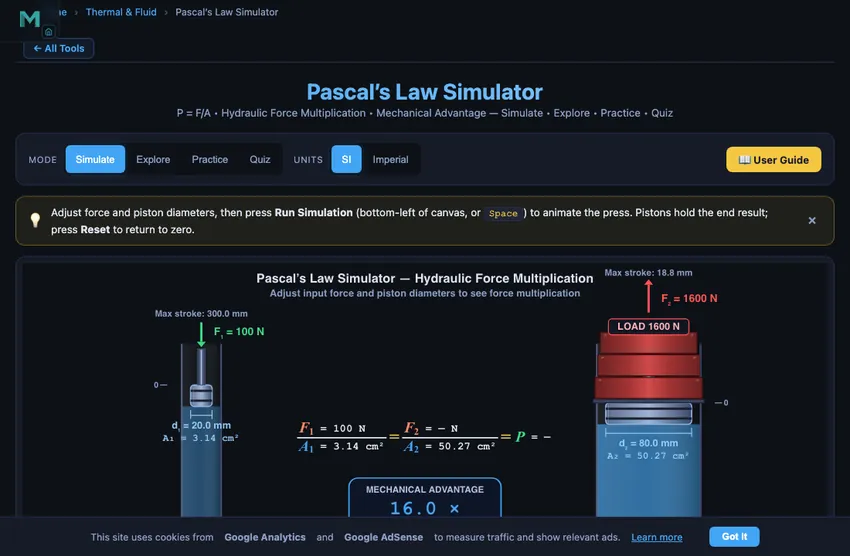
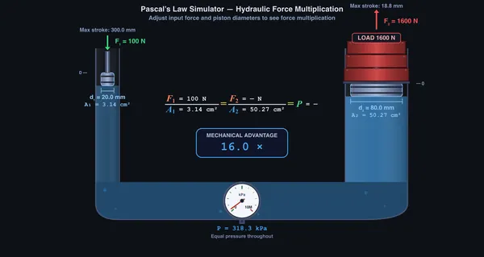

Pascal’s Law Simulator
3D Model — Pascal’s Law Simulator
Free Pascal’s Law simulator — explore hydraulic press force multiplication, adjust piston diameters, and visualize real-time pressure transmission. Try it free!
P = F/A • Hydraulic Force Multiplication • Mechanical Advantage — Simulate • Explore • Practice • Quiz
Display
Σ Live equations — values substituted from current state
ⓘ Model assumptions. The fluid is treated as incompressible and frictionless, with both pistons at the same elevation — so the hydrostatic head ρgh between the two columns is neglected and P₁ = P₂. A real rig also loses force to seal friction, so measured F₂ is always below the ideal value shown here.
⚡ Work & Energy — force × distance trade-off
📈 Time history — pressure & output force during the press cycle
💡 What-if coach — insights based on current values
1 Overview
This free Pascal’s Law simulator lets you explore pressure transmission in hydraulic systems and understand how a hydraulic press multiplies force. The core equation F1/A1 = F2/A2 is demonstrated interactively: adjust the input force and piston diameters to see the output force, system pressure, and mechanical advantage update in real time on the animated canvas.
The simulator covers the complete hydraulic force multiplication principle, including area ratios, pressure uniformity, volume conservation, and the force-distance trade-off. Real-world presets (Car Jack, Hydraulic Press, Brake System, Workshop Lift) let you explore practical applications with a single click. Built for engineering students, automotive technicians, and hydraulics learners.
2 Configuring the System
The simulator opens in Simulate mode showing a hydraulic system with two pistons connected by fluid. The canvas displays animated pistons, force arrows, and pressure indicators. Six readout cards show Input Force, Output Force, Pressure, Mechanical Advantage, Area A1, and Area A2.
Use the Mode pills to switch between Simulate, Explore, Practice, and Quiz. Sliders let you adjust input force (10–1000 N), small piston diameter d1 (10–60 mm), and large piston diameter d2 (30–200 mm). Toggles enable or disable the Pressure Indicator and Stroke Info overlays.
3 Running the Cycle
Adjust the Input Force slider to set F1. The system pressure P = F1/A1 is calculated instantly and displayed. The same pressure acts on the large piston, producing output force F2 = P × A2.
Press the ▶ Run Simulation button (in the toolbar docked at the foot of the canvas) or hit Space to animate the press: the small piston descends through its stroke, fluid flows through the connector with animated arrows, and the large piston rises a proportionally shorter distance (volume conservation: A1·s1 = A2·s2). The pistons hold at their final displacement after the cycle so you can inspect the end result — press Reset in the toolbar to return them to zero, or press Run again to re-press from the start. Use the Speed selector (0.5×, 1×, 2×) to slow the animation for study or speed it up.
Note on visualisation: at high mechanical advantage (e.g. MA = 16), true area-ratio motion makes the large piston travel only 1/16th the small-piston stroke — barely visible on screen. For clear animation, the large-piston stroke is rendered using the linear diameter ratio d1/d2 (which equals √(A1/A2) and is physically anchored). The numeric Stroke readouts shown on the canvas remain accurate to true area-ratio physics (A1·s1 = A2·s2).
Change the piston diameters to see how the area ratio affects mechanical advantage. Since MA = A2/A1 = (d2/d1)², doubling the large piston diameter quadruples the mechanical advantage. The canvas animation shows piston stroke lengths changing accordingly — the large piston moves a shorter distance, conserving work (F1·s1 = F2·s2).
Set a Load on the ram (a mass in kg, shown as lb in Imperial) to ask the real question: will this press lift it? The load is the demand; the output force F2 = F1·(A2/A1) is the capacity. The simulator compares them live and shows one of three verdicts on the canvas banner and the Lift? readout:
- Lifts when capacity > load (weight W = m·g) — press Run and the ram rises with the weight stack.
- Balanced when capacity ≈ load — the ram holds the weight in equilibrium without rising.
- Too heavy when capacity < load — the press stalls; the banner shows the minimum input force needed, F1 = W/MA.
This is why the same jack that easily lifts one corner of a car can't lift the whole thing: force multiplication has a hard ceiling at F2, no matter how long you pump. Increase the input force or the output piston diameter d2 to raise the capacity until the load lifts.
Try the presets: Car Jack (150 N, 20/100 mm, 300 kg corner load), Hydraulic Press (400 N, 30/150 mm, 800 kg), Brake System (80 N, 15/50 mm, 60 kg), and Workshop Lift (200 N, 25/120 mm, 400 kg). Each configures a realistic scenario that lifts its load.
The Display panel in the top-left corner of the canvas (click to expand) controls what the canvas shows. Pressure gauge displays the analog gauge and, while the press runs, small equal-length pressure arrows acting perpendicular to every wetted surface — both piston faces, the walls, and the base. Their equal length is the point: pressure is transmitted undiminished in all directions. The fluid’s blue tint also deepens uniformly as pressure builds. The gauge auto-selects its range the way a technician picks a real Bourdon gauge — a full-scale roughly 1.5× the working pressure — so the needle always sits mid-dial and responds visibly to every slider change (the printed range appears beneath the readout, and a red zone above 350 bar shows when that ceiling falls on the current face). The needle reads live pressure the moment you move a slider, since pressure is set by the applied force, not by the animation. Stroke shows the distance each piston travels, confirming volume conservation, and Equation overlays the live F₁/A₁ = F₂/A₂ = P relationship on the canvas.
Outputs are run-gated: F2, P (equation, gauge, MAX LOAD tag) show “—” until you run the press, then count up with the force ramp — the displayed chain F1/A1 = F2/A2 = P stays numerically true at every frame of the animation. Changing any input invalidates the result back to “—” until the next run.
4 The Underlying Theory
Explore mode provides concept cards across three categories: Fundamentals (Pascal’s Law statement, pressure definition, pressure units), Systems (hydraulic press, hydraulic brakes, hydraulic lift, hydraulic jack), and Calculations (mechanical advantage from area ratio, work-energy conservation, volume displacement, multi-stage systems). Each card includes formulas, diagrams, and worked examples.
The key relationship F1/A1 = F2/A2 is derived step by step, and the energy trade-off (force multiplied, distance reduced) is explained with numerical examples.
5 Try a Problem
Practice mode generates unlimited random hydraulics problems: calculate the output force given input force and piston diameters, find the required input force for a target output, determine the pressure in the system, or compute the small piston stroke needed for a specific large piston displacement. Step-by-step solutions are shown for incorrect answers.
Quiz mode presents 5 randomised questions per session covering Pascal’s Law fundamentals, hydraulic force multiplication, area ratios, and volume conservation. A detailed score with per-question breakdown is displayed at the end.
6 Units, Undo & Export
Switch between SI (N, mm, kPa/MPa, cm²) and Imperial (lbf, in, psi, in²) using the Units pill toggle at the top. All readouts, stepper inputs, canvas labels, and exports update instantly. Internal calculations stay in SI for accuracy.
The toolbar docked at the foot of the canvas puts everything in one strip: Run Simulation, then Undo (Ctrl+Z), Redo (Ctrl+Shift+Z), Reset, CSV export, PNG export and a Sound toggle, then Show Calculations. Every slider change, stepper click, or preset click pushes an undo state, so you can experiment freely and step back to any prior configuration. On narrow screens the tool buttons collapse to icons and scroll horizontally.
Right-click the canvas for a context menu with Export PNG, Export CSV, Copy Pressure, Toggle Grid, and Reset. The stepper inputs next to each slider let you type exact values or click [−]/[+] for precise 1-unit adjustments. Sound effects provide tactile feedback on steppers, preset loads, and drag release — mute with the Sound button in the toolbar.
7 Keyboard Shortcuts
- Space — Run / Stop the press-cycle animation
- Ctrl+Z — Undo last change
- Ctrl+Shift+Z or Ctrl+Y — Redo
- Esc — Close right-click context menu
- Right-click on canvas — Open export/reset context menu
8 Tips & Best Practices
- Double the large piston diameter and observe the mechanical advantage quadruple — area scales with the square of diameter.
- Enable Stroke Info to see the distance trade-off: the large piston moves much less than the small piston, confirming work conservation.
- Use the Brake System preset to understand how a small pedal force creates large braking force at the wheel cylinders.
- Compare presets: The Car Jack has higher MA than the Brake System because its piston diameter ratio is larger.
- Keep the pressure readout in view as you change force or area — it confirms that pressure is uniform throughout the fluid (Pascal’s Law).
- The simulator works on mobile devices in landscape mode — useful for quick calculations in the workshop or lab.
Understanding Pascal’s Law — Free Interactive Simulator

Pascal’s Law is a fundamental principle in fluid mechanics and hydraulic engineering. It states that pressure applied to an enclosed fluid is transmitted undiminished in all directions throughout the fluid. Mathematically: P = F/A, where P is pressure in Pascals (Pa), F is force in Newtons (N), and A is cross-sectional area in square metres (m²). This principle is the foundation of all hydraulic machinery.
Hydraulic Force Multiplication
The most powerful application of Pascal’s Law is force multiplication. When a small force F is applied to a small piston of area A₁, it creates pressure P = F₁/A₁ throughout the hydraulic fluid. This same pressure acts on a larger piston of area A₂, producing an output force F₂ = P × A₂. The mechanical advantage (MA) equals the ratio of piston areas: MA = A₂/A₁ = (d₂/d₁)². A typical hydraulic jack with a 5:1 diameter ratio achieves a mechanical advantage of 25, multiplying force by 25 times.
Volume Conservation & Energy Trade-off
While force is multiplied, distance is reduced proportionally. The volume of incompressible fluid displaced by the small piston (A₁ × d₁) must equal the volume received by the large piston (A₂ × d₂). This means the large piston moves a shorter distance. Work input equals work output in an ideal system: F₁ × d₁ = F₂ × d₂. You gain force but sacrifice stroke length — energy is conserved.
How to Use This Simulator
In Simulate mode, adjust the input force and piston diameters using sliders or select a real-world preset (Car Jack, Hydraulic Press, Brake System). Watch the hydraulic system update in real time showing force arrows, pressure indicators, and mechanical advantage. Switch to Explore mode to study 12 key concepts across Fundamentals, Systems, and Calculations. Practice mode generates random problems, and Quiz mode tests your understanding with 5 questions per session.
A 50 N Push Lifts a 5000 N Car — The Workshop Jack Calculation
The hydraulic bottle jack in every workshop is the simplest demonstration of Pascal’s law. Take a small input piston of 10 mm diameter, a large output piston of 100 mm diameter. You push down on a lever that delivers 50 N to the small piston. What load can it lift?

| Quantity | Working | Result |
|---|---|---|
| Small piston area | A1 = π(0.01)²/4 | 7.85×10−5 m² |
| Pressure in the fluid | P = F1/A1 = 50/7.85×10−5 | 637 kPa (~6.4 bar) |
| Large piston area | A2 = π(0.1)²/4 | 7.85×10−3 m² |
| Output force | F2 = P·A2 = 637,000 × 0.00785 | 5000 N (about 510 kgf) |
| Mechanical advantage | MA = A2/A1 = (D2/D1)² = 10² | 100 |
| Distance trade-off (energy conservation) | If small piston moves 100 mm, large piston moves... | 1 mm only |
That is what makes the jack feel slow. The hundred-fold force multiplication is real, but you have to pump the handle a hundred times to lift the car by an inch. Every workshop apprentice learns this the first time they jack up a vehicle.
Why Hydraulics Dominate Above a Few Tonnes
Mechanical force multiplication scales badly. A lever for a 5-tonne load with practical effort would need to be 50 metres long. A pulley system for 100 tonnes is theoretically possible but the friction losses become absurd. Hydraulics scale beautifully — just bigger pistons or higher pressure. Industrial hydraulic presses regularly deliver 1000−5000 tonnes of force in a press table you can stand next to.
The numbers behind a real hydraulic press: typical industrial systems operate at 200−350 bar. A 350 bar press with a 300 mm diameter cylinder gives F = 35,000 kPa × (π×0.15²) = 2470 kN = 247 tonnes. From a single 200 mm piston. The same force with a 5:1 lever would need a 50-tonne push at the handle, which is humanly impossible. Hydraulics is the only way to get there.
Three Places Pascal’s Law Shows Up Around You
- Vehicle brakes. Pressing the pedal compresses fluid in the master cylinder; pressure transmits through the brake lines to slave cylinders at each wheel, pushing brake pads or shoes against the discs or drums. The MA is set by the master/slave area ratio — typically 5:1 to 8:1.
- Excavator booms. Each joint of a digger’s arm is moved by a hydraulic cylinder at 200−250 bar. The pressure is generated by an engine-driven pump; the operator just routes the flow through valves. Forces in the kN to MN range are routine.
- Dental and hospital chairs. Adjustable-height chairs use a hand-pumped hydraulic system. Same Pascal’s law principle, scaled down: the chair rises a centimetre with each pump stroke because the cylinder is fairly large.
When the Ideal Pascal Calculation Goes Wrong
- Air in the fluid. Air is compressible. A bubble in the system absorbs pump strokes that should have moved the load. Brake systems have to be bled periodically to expel any air that has accumulated.
- Pipe friction. Long hydraulic lines lose pressure to friction (calculate with Darcy-Weisbach for laminar flow in narrow lines). Forklifts with hoses running the length of the boom may lose 10−20 bar to friction at full flow.
- Seal leakage. Worn piston seals let fluid bypass, dropping the apparent MA. Internal leakage is the most common cause of a jack that “won’t hold” the car overnight.
- Cavitation on the suction side. When a pump tries to draw fluid faster than the inlet can supply, dissolved gas vapourises into bubbles, eroding the pump impeller. NPSH calculations are essential for high-flow systems.
Pascal’s Law — Key Formulas
| Parameter | Formula | Description |
|---|---|---|
| Pascal’s Law | P = F / A (constant throughout) | Pressure applied to confined fluid transmits equally |
| Hydraulic Advantage | F2 = F1 × (A2 / A1) | Output force from area ratio |
| Distance Trade-off | d2 = d1 × (A1 / A2) | Larger piston moves less distance |
| Mechanical Advantage | MA = A2 / A1 = D2² / D1² | Force multiplication ratio |
| Work Conservation | W = F1 × d1 = F2 × d2 | Work in = Work out (ideal system) |
Explore Related Simulators
If you found this Pascal’s Law simulator helpful, explore our Bernoulli’s Principle simulator, Fluid Flow simulator, and Pressure Gauge simulator, and Pneumatic Circuit Simulator for more hands-on practice.